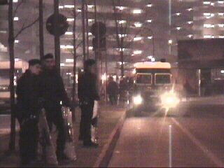

|
AC Milan - Roda JC (0-1) 28 februari 2002 |
Woensdagmiddag, file in Zwitserland.

Om 19.00 uur begint de training. We mogen een
kijkje nemen in de kleedkamer voor Roda. Een
doorsnee basisschool heeft een beter kleedhok!
Het spelerstunneltje.
De training begint.
Nog lang niet alle supporters zijn gearriveerd
waardoor er slechts enkele honderden Rodafans
aanwezig zijn.
De geschorste Gerrie Senden mag mee-trainen.
www.rodafanshelden.cjb.net
Donderdagmiddag: op het Piazza del Duomo en
omgeving verzamelen zich steeds meer
Roda-supporters.
Zoals hier in de prachtige overkoepelde promenade.
Vooral vrouwelijke fans zochten "de stier" om
een hak in diens geslacht te planten en vervolgens
drie rondjes te draaien om zodoende geluk af te
dwingen.
Hij doet vrolijk mee.
Tussendoor even naar het San Siro voor een
foto-safari van dit grootste stadion van Italië.
Kolossaal, maar van een even eenvoudige als
betoverende schoonheid.
Op zoek naar een sportgazet van een bekend merk
ontwaren we deze gevederde stadsterroristen.
In de late na-middag kleurt het domplein geheel
geel en zwart.
Rakker zet zijn hondenkop af.
Deze kop izz echt...
TravesTIET denkt dat hij op de love-parade is.

Tegen 19.00 uur gaan we naar het stadion. Er is
een enorme politiemacht op de been.
Binnenkomen ging vrij langzaam.
Hier arriveert een grotere groep Rodafans onder
politie-escorte.
Pa en ma Vrede in de kantine.
De RJC-vlag zweeft over het publiek.
Rakker met zijn Milanese equivalent.
De warming-up begint.
De gezangen en ballonnen vanuit het Roda-vak...
...zorgen voor een levendige indruk.
De harde kernen van Milaan brengen vooralsnog
weinig sfeer.
De 2000 Roda-supporters zijn verdeeld over
twee vakken.
Het scorebord.
De "familietribune". In totaal zijn er slechts ca.
8.000 toeschouwers.
De Roda-spelers groeten hun supporters.
Onze elf!
En de twaalf van AC Milan :-(
©KPD